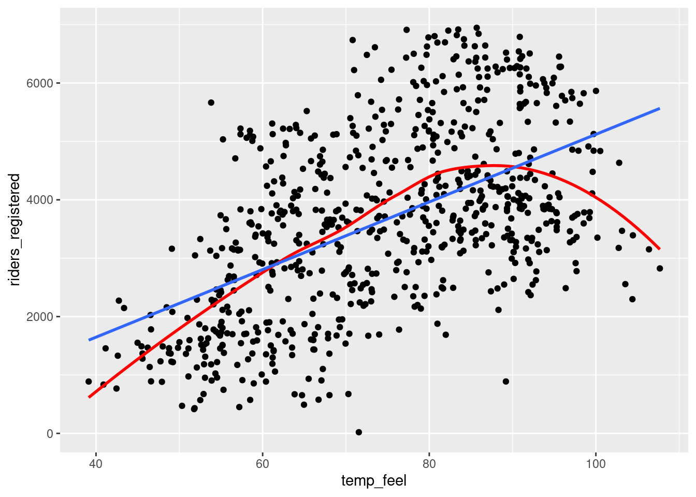
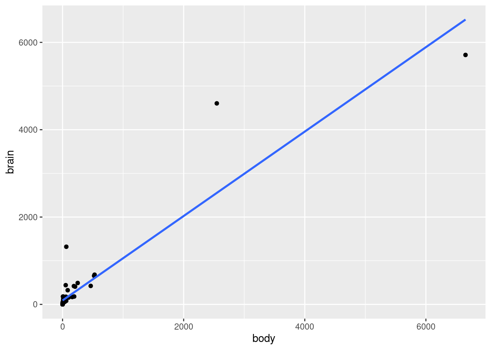
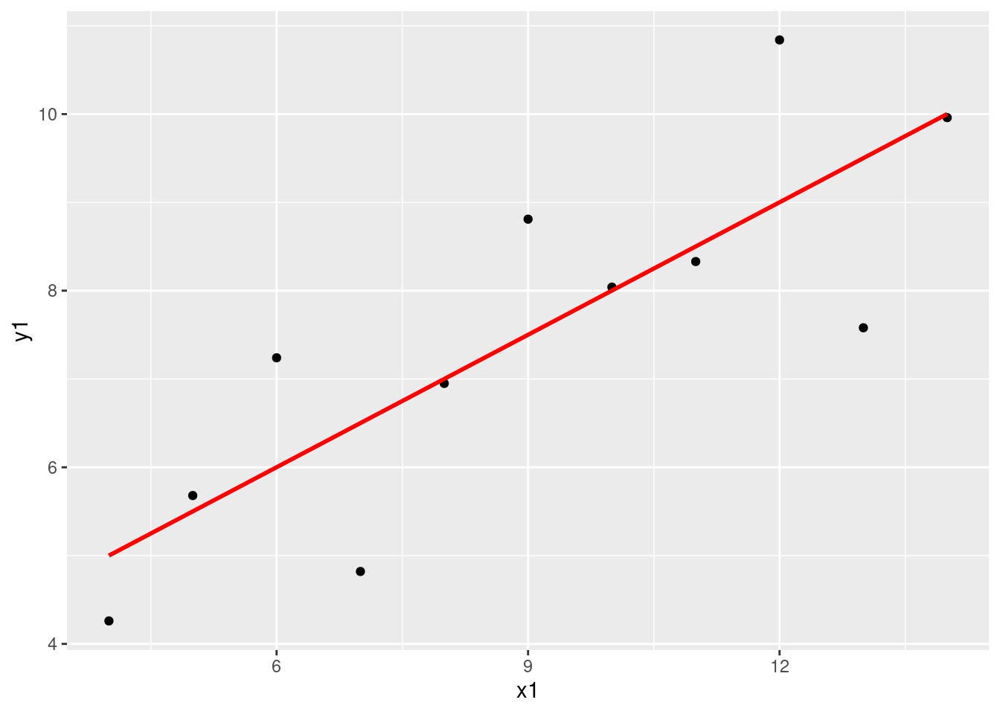
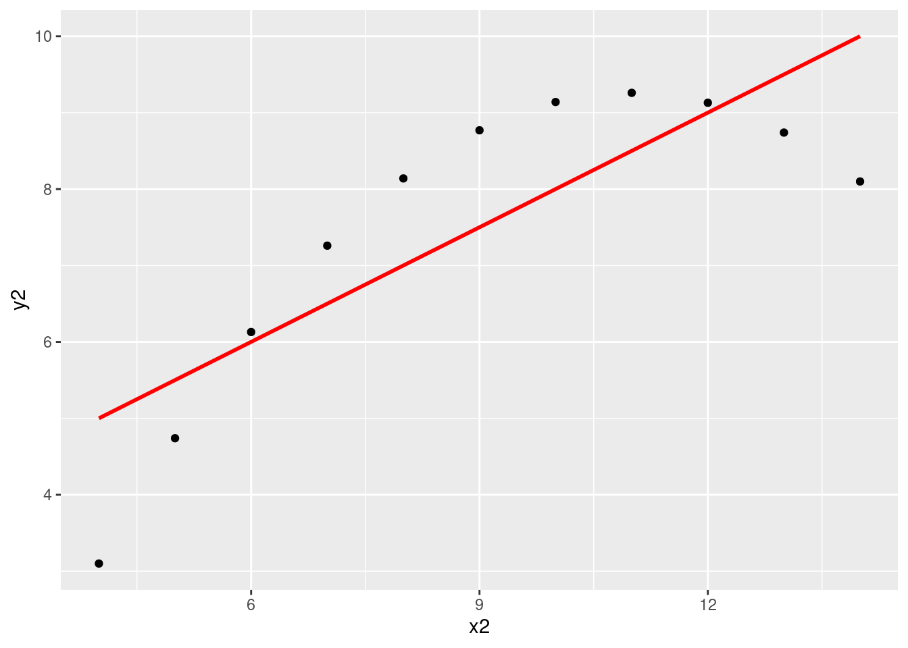
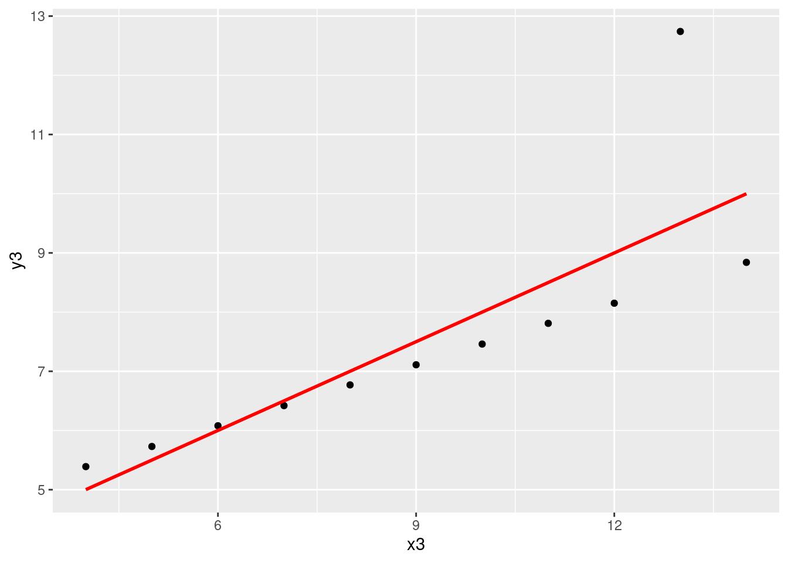
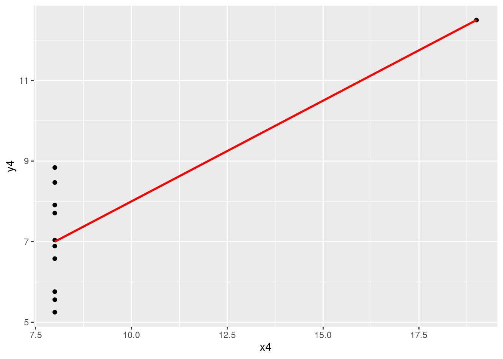

# Load packages and import data
library(tidyverse)
bikes <- read_csv("https://mac-stat.github.io/data/bikeshare.csv")Simple linear regression: model evaluation
Notes
Learning goals
By the end of this lesson, you should be able to:
- Use residual plots to evaluate the correctness of a model
- Explain the rationale for the R-squared metric of model strength
- Interpret the R-squared metric
- Think about ethical implications of modeling by examining the impacts of biased data, power dynamics, the role of categorization, and the role of emotion and lived experience
Readings and videos
Choose either the reading or the videos to go through before class.
- Reading: Sections 1.7, 3.7, and 3.8 in the STAT 155 Notes
- Note: You do not need to focus on the “Ladder of Power” in Section 3.8. Transformations in general will be the focus of the next activity we do.
- Videos:
Model Assumptions
One way to think about model evaluation is to consider whether or not underlying assumptions of our regression models are being met (or not). Asking ourselves if our models are “wrong”, “strong”, and “fair” approaches this from one perspective. To the first question (whether our model is wrong), recall the following four assumptions of linear regression:
- Linearity
- Independence
- Normality
- Equal Variance
Note that they spell “LINE” (how convenient!).
By assumptions, we mean that the above four “things” are needed mathematically in order for linear regression to “work”.
Whereas we can check some of these assumptions using a residual plot, we need to examine the context of our data collection when checking the Independence assumption. What we mean by independence, is that the residuals in our model do not depend on one another. This may seem like an unsatisfying definition, so here are some examples:
Suppose I want to understand the association between a person’s high school GPA and their college GPA. I collect data from every graduating senior, at three different high schools. If I have college GPA as my outcome, and high school GPA as my predictor, are my residuals independent? Probably not! It is reasonable to believe that students from the same high school may have similar GPAs, due to resources their high school may have had available, or specific teachers grading differently at one school or another. This is an example of clustering, where we have clusters of students within schools. The independence assumption of our linear regression model would be violated. One way to address this would be to include which high school they went to as an additional covariate in our regression model (we’ll get to this with multiple linear regression), and more advanced methods are covered in a course on Correlated Data.
Suppose I want to understand the association between a mouse’s weight and their water consumption across time. I collect data for 365 days for ten different mice, recording their weight and water consumption each day of the year. If I have weight as my predictor and water consumption as my outcome, are my residuals independent? Nope! This is an example of correlated data that is longitudinal in nature: I have multiple observations per individual (mouse) across time. A mouse’s weight one day is certainly not independent of it’s weight the following day. The independence assumption of our linear regression model would again be violated. One way to address this would be to include “Mouse ID” as a predictor in our regression model (again, we’ll get to this with multiple linear regression).
All types of data that will violate the independence assumption of linear regression will have some sort of correlation structure (within individual, across time, across space, etc.). Think about clusters. If your observations fall neatly into specific clusters, your data may violate the independence assumption of linear regression.
File organization: Save this file in the “Activities” subfolder of your “STAT155” folder.
Exercises
Exercise 1: Is the model correct?
Let’s revisit the Capital Bikeshare data:
We previously explored a model of daily ridership among registered users as a function of temperature:
# Fit a linear model
bike_model <- lm(riders_registered ~ temp_feel, data = bikes)
# Check it out
summary(bike_model)Plot this relationship with both a curved and linear trend line. Based on this plot, do you think the model is correct? If not, which of the LINE assumptions does it violate?
# Plot temp_feel vs riders_registered with a model trend
___(___, aes(x = ___, y = ___)) +
geom___() +
geom___(se = FALSE, color = "red") +
geom___(method = "lm", se = FALSE)Exercise 2: Residual plots
Plotting the residuals vs the predictions (also called “fitted values”) for each case can help us assess how wrong our model is. This will be a particularly important tool when evaluating models with multiple predictors. Construct the residual plot for bike_model. As with the scatterplot, this plot indicates that bike_model violates one of the LINE assumptions. Explain which assumption that is and how you can tell that from just the residual plot.
Notes:
- Information about the residuals (
.resid) and predictions (.fitted) are stored within our model, thus we start ourggplot()with the model name as opposed to the raw dataset. We will rarely startggplot()with a model instead of the data. - We can fix this model by adding a quadratic “transformation term”. We’ll discuss this idea in our next class.
# Check out the residual plot for bike_model
ggplot(bike_model, aes(x = .fitted, y = .resid)) +
geom_point() +
geom_hline(yintercept = 0) +
geom_smooth(se = FALSE)Exercise 3: What’s incorrect about this model?
Consider another example. The mammals data includes data on the average brain weight (g) and body weight (kg) for a variety of mammals:
# Import the data
mammals <- read_csv("https://mac-stat.github.io/data/mammals.csv")
# Check it out
head(mammals)Fit a model of brain vs body weight:
# Construct the model
mammal_model <- lm(brain ~ body, mammals)
# Check it out
summary(mammal_model)- Construct two plots that will help us evaluate
mammal_model:
# Scatterplot of brain weight (y) vs body weight (x)
# Include a model trend line (i.e. a representation of mammal_model)# Residual plot for mammal_model- These two plots confirm that our model is wrong. What is wrong? That is, which of the LINE assumptions are violated? (NOTE: We again can fix this model by “transforming” one or both of the
brainandbodyvariables. We’ll discuss this idea in our next class.)
Exercise 4: Exploring mammals
Just for fun, let’s dig into the mammals data. Discuss what you observe:
# Label the points by the animal name!
# Discuss: What 2 things are new in this code?
ggplot(mammals, aes(x = body, y = brain, label = animal)) +
geom_text() +
geom_smooth(method = "lm", se = FALSE) # Zoom in
ggplot(mammals, aes(x = body, y = brain, label = animal)) +
geom_text() +
lims(y = c(0, 1500), x = c(0, 600))# Zoom in more
ggplot(mammals, aes(x = body, y = brain, label = animal)) +
geom_text() +
lims(y = c(0, 500), x = c(0, 200))Exercise 5: Is the model strong? Developing R-squared intuition
The R-squared metric is a way to quantify the strength of a model. It measures how much variation in the outcome/response variable can be explained by the variation in the predictors.
Where does R-squared come from? Well, it turns out that we can partition the variance of the observed response values into the variability that’s explained by the model (the variance of the predictions) and the variability that’s left unexplained by the model (the variance of the residuals):
\[\text{Var(observed) = Var(predicted) + Var(residuals)}\]
Strong models have residuals that don’t deviate far from 0. So the smaller the variance in the residuals (thus larger the variance in the predictions), the stronger the model. Take a look at the picture below and write a few sentences addressing the following:
The two rows of plots show a stronger and a weaker model. Just by looking at the blue trend line and the dispersion of the points about the line, which row corresponds to the stronger model? How can you tell? Which row would you expect to have a higher correlation?
What is different about the variance of the residuals from the first to the second row?

Putting this together, the R-squared compares Var(predicted) to Var(response):
\[R^2 = \frac{\text{variance of predicted values}}{\text{variance of observed response values}} = 1 - \frac{\text{variance of residuals}}{\text{variance of observed response values}}\] ::: {.callout-note collapse=“true”} ## R-squared
\[ R^2 = 1 - \frac{SSE}{SSTO} = 1 - \frac{\sum (y_i - \hat{y}_i)^2}{\sum (y_i - \bar{y})^2} \] where \(y_i\) are our observed outcomes, \(i = 1, \dots, n\), \(\hat{y}_i\) are our fitted values/predictions, and \(\bar{y}\) is our observed average outcome. :::
Exercise 6: R-squared Interpretations
Recall bikemod1 from Exercise 3, where we predicted registered riders by what the temperature felt like on a given day. Use the summary function to look out the model output for bikemod1, and interpret the \(R^2\) value for this model, in the context of the problem. (NOTE: \(R^2\) is reported in output here as “Multiple R-squared”).
# Get R-squared
summary(bike_model)Exercise 7: Further exploring R-squared
In this exercise, we’ll look at data from a synthetic dataset called Anscombe’s quartet. Load the data in as follows, and look at the first few rows:
data(anscombe)
# Look at the first few rowsThe anscombe data is actually 4 datasets in one: x1 and y1 go together, and so forth. Examine the coefficient estimates (in the “Estimate” column of the “Coefficients:” part) and the “Multiple R-squared” value on the second to last line. What do you notice? How do these models compare?
anscombe_mod1 <- lm(y1 ~ x1, data = anscombe)
anscombe_mod2 <- lm(y2 ~ x2, data = anscombe)
anscombe_mod3 <- lm(y3 ~ x3, data = anscombe)
anscombe_mod4 <- lm(y4 ~ x4, data = anscombe)
summary(anscombe_mod1)
summary(anscombe_mod2)
summary(anscombe_mod3)
summary(anscombe_mod4)Now take a look at the following scatterplots of the 4 pairs of variables. What do you notice? What takeaway can we draw from this exercise?
ggplot(anscombe, aes(x = x1, y = y1)) +
geom_point() +
geom_smooth(method = "lm", color = "red", se = FALSE)
ggplot(anscombe, aes(x = x2, y = y2)) +
geom_point() +
geom_smooth(method = "lm", color = "red", se = FALSE)
ggplot(anscombe, aes(x = x3, y = y3)) +
geom_point() +
geom_smooth(method = "lm", color = "red", se = FALSE)
ggplot(anscombe, aes(x = x4, y = y4)) +
geom_point() +
geom_smooth(method = "lm", color = "red", se = FALSE)Exercise 8: Biased data, biased results: example 1
DATA ARE NOT NEUTRAL. Data can reflect personal biases, institutional biases, power dynamics, societal biases, the limits of our knowledge, and so on. In turn, biased data can lead to biased analyses. Consider an example.
Do a Google image search for “statistics professor.” What do you observe?
These search results are produced by a search algorithm / model. Explain why the data used by this model are not neutral.
What are the potential implications, personal or societal, of the search results produced from this biased data?
Exercise 9: Biased data, biased results: example 2
Consider the example of a large company that developed a model / algorithm to review the résumés of applicants for software developer & other tech positions. The model then gave each applicant a score indicating their hireability or potential for success at the company. You can think of this model as something like:
\[\text{potential for success } = \beta_0 + \beta_1 (\text{features from the résumé})\]
Skim this Reuter’s article about the company’s résumé model.
Explain why the data used by this model are not neutral.
What are the potential implications, personal or societal, of the results produced from this biased data?
Exercise 10: Rigid data collection systems
When working with categorical variables, we’ve seen that our units of observation fall into neat groups. Reality isn’t so discrete. For example, check out questions 6 and 9 on page 2 of the 2020 US Census. With your group, discuss the following:
What are a couple of issues you see with these questions?
What impact might this type of data collection have on a subsequent analysis of the census responses and the policies it might inform?
Can you think of a better way to write these questions while still preserving the privacy of respondents?
FOR A DEEPER DISCUSSION: Read Chapter 4 of Data Feminism on “What gets counted counts”.
Exercise 11: Presenting data: “Elevating emotion and embodiment”
Note: The following example highlights work done by W.E.B. Du Bois in the late 1800s / early 1900s. His work uses language common to that time period and addresses the topic of slavery.
The types of visualizations we’ve been learning in this course are standard practice, hence widely understood. Yet these standard visualizations can also suppress the lived experiences of people represented in the data, hence can miss the larger point. W.E.B. Du Bois (1868–1963), a “sociologist, socialist, historian, civil rights activist, Pan-Africanist, author, writer, and editor”1, was a pioneer in elevating emotion and embodiment in data visualization. For the Paris World Fair of 1900, Du Bois and his team of students from Atlanta University presented 60 data visualizations of the Black experience in America, less than 50 years after the abolishment of slavery. To this end, Du Bois noted that “I wanted to set down its aim and method in some outstanding way which would bring my work to notice by the thinking world.” That is, he wanted to increase the impact of his work by partnering technical visualizations with design that better connects to lived experiences. Check out:
An article by Allen Hillery (@AlDatavizguy).
A complete set of the data visualizations provided by Anthony Starks (@ajstarks).
Discuss your observations. In what ways do you think the W.E.B. Du Bois visualizations might have been more effective at sharing his work than, say, plainer bar charts?
FOR A DEEPER DISCUSSION AND MORE MODERN EXAMPLES: Read Chapter 3 of Data Feminism on the principle of elevating emotion and embodiment, i.e. the value of “multiple forms of knowledge, including the knowledge that comes from people as living, feeling bodies in the world.”
Reflection
What has stuck with you most in our exploration of model evaluation? Why
Response: Put your response here.
Solutions
Exercise 1: Is the model correct?
The red curved trend line shows a clear downward trend around 85 degrees, which contextually makes plenty of sense—extremely hot days would naturally see less riders. Overall the combination of the upward trend and downward trend makes for a curved relationship that is not captured well by a straight line of best fit. Specifically, a simple linear regression model would violate the Linearity assumption.
# Load packages and import data
library(readr)
library(ggplot2)
library(dplyr)
bikes <- read_csv("https://mac-stat.github.io/data/bikeshare.csv")
ggplot(bikes, aes(x = temp_feel, y = riders_registered)) +
geom_point() +
geom_smooth(se = FALSE, color = "red") +
geom_smooth(method = "lm", se = FALSE)
Exercise 2: Residual plots
The residual plot shows a lingering trend in the residuals—the blue curve traces the trend in the residuals, and it does not lie flat on the y = 0 line. This again suggests that the Linearity assumption is violated.
bike_model <- lm(riders_registered ~ temp_feel, data = bikes)
# Check out the residual plot for bike_model
ggplot(bike_model, aes(x = .fitted, y = .resid)) +
geom_point() +
geom_hline(yintercept = 0) +
geom_smooth(se = FALSE)
Exercise 3: What’s incorrect about this model?
# Import the data
mammals <- read_csv("https://mac-stat.github.io/data/mammals.csv")
# Check it out
head(mammals)
## # A tibble: 6 × 4
## ...1 animal body brain
## <dbl> <chr> <dbl> <dbl>
## 1 1 Arctic fox 3.38 44.5
## 2 2 Owl monkey 0.48 15.5
## 3 3 Mountain beaver 1.35 8.1
## 4 4 Cow 465 423
## 5 5 Grey wolf 36.3 120.
## 6 6 Goat 27.7 115
# Construct the model
mammal_model <- lm(brain ~ body, mammals)
# Check it out
summary(mammal_model)
##
## Call:
## lm(formula = brain ~ body, data = mammals)
##
## Residuals:
## Min 1Q Median 3Q Max
## -810.07 -88.52 -79.64 -13.02 2050.33
##
## Coefficients:
## Estimate Std. Error t value Pr(>|t|)
## (Intercept) 91.00440 43.55258 2.09 0.0409 *
## body 0.96650 0.04766 20.28 <2e-16 ***
## ---
## Signif. codes: 0 '***' 0.001 '**' 0.01 '*' 0.05 '.' 0.1 ' ' 1
##
## Residual standard error: 334.7 on 60 degrees of freedom
## Multiple R-squared: 0.8727, Adjusted R-squared: 0.8705
## F-statistic: 411.2 on 1 and 60 DF, p-value: < 2.2e-16# Scatterplot of brain weight (y) vs body weight (x)
# Include a model trend line (i.e. a representation of mammal_model)
ggplot(mammals, aes(y = brain, x = body)) +
geom_point() +
geom_smooth(method = "lm", se = FALSE)
# Residual plot for mammal_model
ggplot(mammal_model, aes(x = .fitted, y = .resid)) +
geom_point() +
geom_hline(yintercept = 0) +
geom_smooth(se = FALSE)
- The biggest issue here is that the assumption of equal variance is violated. There’s much greater variability in the residuals as the predictions increase. This is because there’s much greater variability in the brain weights (y) as body weights (x) increase.
Exercise 4: Exploring mammals
Answers will vary.
Exercise 5: Is the model strong? Developing R-squared intuition
The R-squared metric is a way to quantify the strength of a model. It measures how much variation in the outcome/response variable can be explained by the model.
Where does R-squared come from? Well, it turns out that we can partition the variance of the observed response values into the variability that’s explained by the model (the variance of the predictions) and the variability that’s left unexplained by the model (the variance of the residuals):
\[\text{Var(observed) = Var(predicted) + Var(residuals)}\]
“Good” models have residuals that don’t deviate far from 0. So the smaller the variance in the residuals (thus larger the variance in the predictions), the stronger the model. Take a look at the picture below and write a few sentences addressing the following:
- The first row corresponds to the weaker model. We can tell because the points are much more dispersed from the trend line than in the second row. Recall that the correlation metric measures how closely clustered points are about a straight line of best fit, so we would expect the correlation to be lower for the first row than the second row.
- The variance of the residuals is much lower for the second row—the residuals are all quite small. This indicates a stronger model.
Exercise 6: R-squared Interpretations
summary(bike_model)
##
## Call:
## lm(formula = riders_registered ~ temp_feel, data = bikes)
##
## Residuals:
## Min 1Q Median 3Q Max
## -3607.1 -959.2 -153.8 998.2 3304.8
##
## Coefficients:
## Estimate Std. Error t value Pr(>|t|)
## (Intercept) -667.916 251.608 -2.655 0.00811 **
## temp_feel 57.892 3.306 17.514 < 2e-16 ***
## ---
## Signif. codes: 0 '***' 0.001 '**' 0.01 '*' 0.05 '.' 0.1 ' ' 1
##
## Residual standard error: 1310 on 729 degrees of freedom
## Multiple R-squared: 0.2961, Adjusted R-squared: 0.2952
## F-statistic: 306.7 on 1 and 729 DF, p-value: < 2.2e-16Multiple R-squared: 0.2961
Interpretation: 29.61% of the variation in number of registered riders on any given day can be explained by the variation in temperature (specifically, what temperature it “feels” like it is).
Exercise 7: Further exploring R-squared
In this exercise, we’ll look at data from a synthetic dataset called Anscombe’s quartet. Load the data in as follows, and look at the first few rows:
data(anscombe)
# Look at the first few rows
head(anscombe)
## x1 x2 x3 x4 y1 y2 y3 y4
## 1 10 10 10 8 8.04 9.14 7.46 6.58
## 2 8 8 8 8 6.95 8.14 6.77 5.76
## 3 13 13 13 8 7.58 8.74 12.74 7.71
## 4 9 9 9 8 8.81 8.77 7.11 8.84
## 5 11 11 11 8 8.33 9.26 7.81 8.47
## 6 14 14 14 8 9.96 8.10 8.84 7.04All of these models have close to the same intercept, slope, and R-squared!
anscombe_mod1 <- lm(y1 ~ x1, data = anscombe)
anscombe_mod2 <- lm(y2 ~ x2, data = anscombe)
anscombe_mod3 <- lm(y3 ~ x3, data = anscombe)
anscombe_mod4 <- lm(y4 ~ x4, data = anscombe)
summary(anscombe_mod1)
##
## Call:
## lm(formula = y1 ~ x1, data = anscombe)
##
## Residuals:
## Min 1Q Median 3Q Max
## -1.92127 -0.45577 -0.04136 0.70941 1.83882
##
## Coefficients:
## Estimate Std. Error t value Pr(>|t|)
## (Intercept) 3.0001 1.1247 2.667 0.02573 *
## x1 0.5001 0.1179 4.241 0.00217 **
## ---
## Signif. codes: 0 '***' 0.001 '**' 0.01 '*' 0.05 '.' 0.1 ' ' 1
##
## Residual standard error: 1.237 on 9 degrees of freedom
## Multiple R-squared: 0.6665, Adjusted R-squared: 0.6295
## F-statistic: 17.99 on 1 and 9 DF, p-value: 0.00217
summary(anscombe_mod2)
##
## Call:
## lm(formula = y2 ~ x2, data = anscombe)
##
## Residuals:
## Min 1Q Median 3Q Max
## -1.9009 -0.7609 0.1291 0.9491 1.2691
##
## Coefficients:
## Estimate Std. Error t value Pr(>|t|)
## (Intercept) 3.001 1.125 2.667 0.02576 *
## x2 0.500 0.118 4.239 0.00218 **
## ---
## Signif. codes: 0 '***' 0.001 '**' 0.01 '*' 0.05 '.' 0.1 ' ' 1
##
## Residual standard error: 1.237 on 9 degrees of freedom
## Multiple R-squared: 0.6662, Adjusted R-squared: 0.6292
## F-statistic: 17.97 on 1 and 9 DF, p-value: 0.002179
summary(anscombe_mod3)
##
## Call:
## lm(formula = y3 ~ x3, data = anscombe)
##
## Residuals:
## Min 1Q Median 3Q Max
## -1.1586 -0.6146 -0.2303 0.1540 3.2411
##
## Coefficients:
## Estimate Std. Error t value Pr(>|t|)
## (Intercept) 3.0025 1.1245 2.670 0.02562 *
## x3 0.4997 0.1179 4.239 0.00218 **
## ---
## Signif. codes: 0 '***' 0.001 '**' 0.01 '*' 0.05 '.' 0.1 ' ' 1
##
## Residual standard error: 1.236 on 9 degrees of freedom
## Multiple R-squared: 0.6663, Adjusted R-squared: 0.6292
## F-statistic: 17.97 on 1 and 9 DF, p-value: 0.002176
summary(anscombe_mod4)
##
## Call:
## lm(formula = y4 ~ x4, data = anscombe)
##
## Residuals:
## Min 1Q Median 3Q Max
## -1.751 -0.831 0.000 0.809 1.839
##
## Coefficients:
## Estimate Std. Error t value Pr(>|t|)
## (Intercept) 3.0017 1.1239 2.671 0.02559 *
## x4 0.4999 0.1178 4.243 0.00216 **
## ---
## Signif. codes: 0 '***' 0.001 '**' 0.01 '*' 0.05 '.' 0.1 ' ' 1
##
## Residual standard error: 1.236 on 9 degrees of freedom
## Multiple R-squared: 0.6667, Adjusted R-squared: 0.6297
## F-statistic: 18 on 1 and 9 DF, p-value: 0.002165But when we look at the scatterplots, they all look substantially different, and we would want to approach our modeling differently for each one:
x1andy1: A linear model seems appropriate for this data.x2andy2: The scatterplot is clearly curved—a “linear” regression model with squared terms, for example, would be more appropriate for this data. (We’ll talk more about ways to handle nonlinear relationships soon!)x3andy3: There is a very clear outlier at aboutx3 = 13that we would want to dig into to better understand the context. After that investigation, we might consider removing this outlier and refitting the model.x4andy4: There is clearly something strange going on with most of the cases having anx4value of exactly 8. We would not want to jump straight into modeling. Instead, we should dig deeper to find out more about this data.
ggplot(anscombe, aes(x = x1, y = y1)) +
geom_point() +
geom_smooth(method = "lm", color = "red", se = FALSE)
ggplot(anscombe, aes(x = x2, y = y2)) +
geom_point() +
geom_smooth(method = "lm", color = "red", se = FALSE)
ggplot(anscombe, aes(x = x3, y = y3)) +
geom_point() +
geom_smooth(method = "lm", color = "red", se = FALSE)
ggplot(anscombe, aes(x = x4, y = y4)) +
geom_point() +
geom_smooth(method = "lm", color = "red", se = FALSE)
Exercises 8 - 11
No solutions for these exercises. These require longer discussions, not discrete answers.
Footnotes
https://en.wikipedia.org/wiki/W._E._B._Du_Bois↩︎